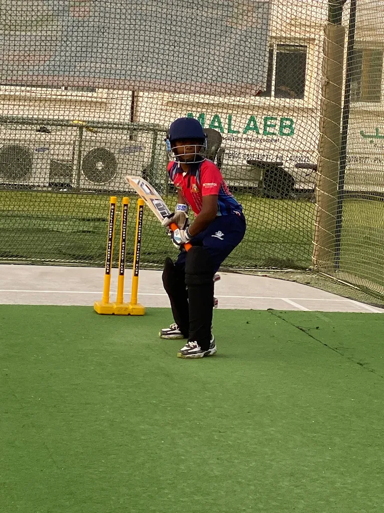
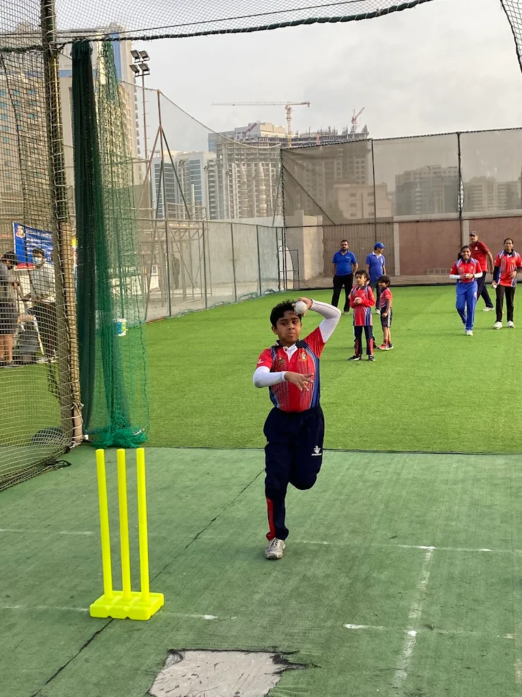
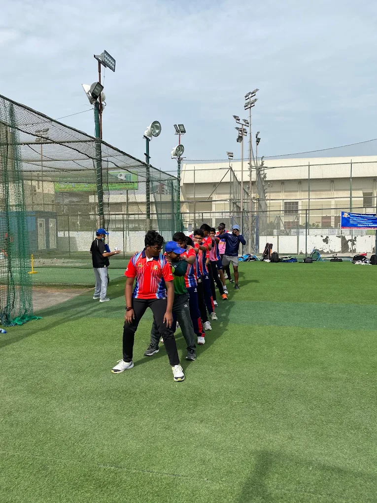
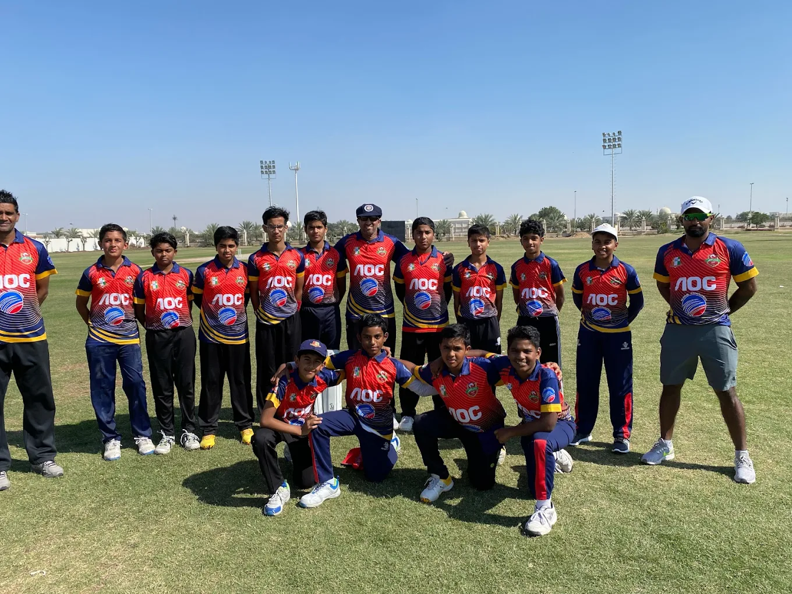

Structured progressions
Every player moves through a clear development pathway. No filler drills. No sessions that feel busy but go nowhere.

Structured coaching for boys and girls, ages 6 to 20. The environment, the coaching, and the discipline to grow.

Most kids who love cricket never get access to the kind of structured, intentional coaching that actually builds a player. At Cricketers Academy, every session is designed with a purpose, every coach is accountable for your child's progress, and every program is built around where your child is today, not where they should be.
We train the technical and the mental side of the game together. Because the best players in the world know that one without the other doesn't hold up under pressure.
Every player moves through a clear development pathway. No filler drills. No sessions that feel busy but go nowhere.
Our coaches hold Level 2 and Level 3 certifications and bring first-class playing experience to every session.
We cap batch sizes to keep the coach-to-player ratio tight. Your child gets attention, not just access.
From first steps at age six to Under-19 tournament cricket, plus a dedicated girls' program.
Where every cricketer starts. We build the fundamentals and a genuine love for the game before competitive age-group cricket begins.
The competitive pathway. Ten squads training and competing in age-group tournaments across Dubai, with players moving up as they develop.
Same coaching, same facilities, same pathway as the boys. A close-knit and growing squad of around 25 female cricketers.
We field ten teams, from Under-10 to Under-19, and compete in age-group tournaments across Dubai. Here is where our squads stand on the UAE circuit.
Tell us your child's age and a little about their experience. We'll find a slot during a weekend morning or evening session, or a weekday evening. We train every day except Mondays, and all equipment is provided.
During the trial, a coach assesses current technique across batting, bowling, and fielding, and gets a feel for where your child is today.
We recommend the right starting point: Foundation for our youngest players, an age-group squad from U10 to U19, or our girls' program.
Your child joins a small group on a structured curriculum. We communicate progress and hold ourselves accountable for it.


Practice nets, an open ground, and small-group coaching, year-round, in the centre of Dubai.
I enrolled my son when he was nine and barely knew the rules. Two years later he's opening the batting for his school team. The coaches here actually care about the individual, not just the group.
We offer a free 60-minute trial session across all programs. No commitment, no pressure. Just bring your kit and let us show you what we do.